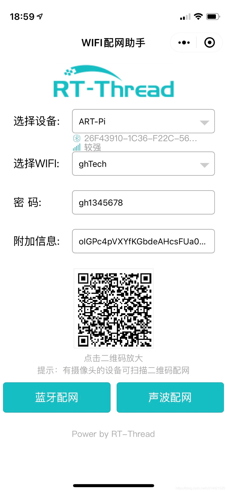
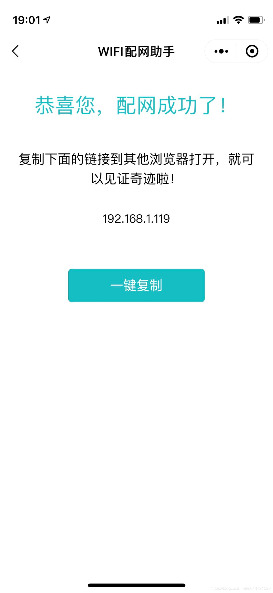
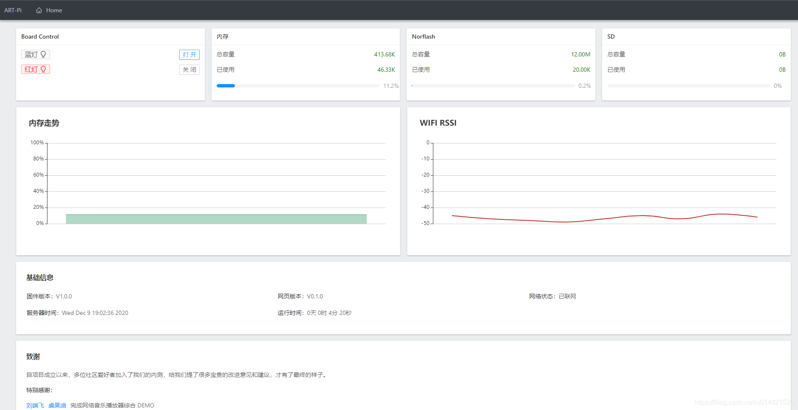
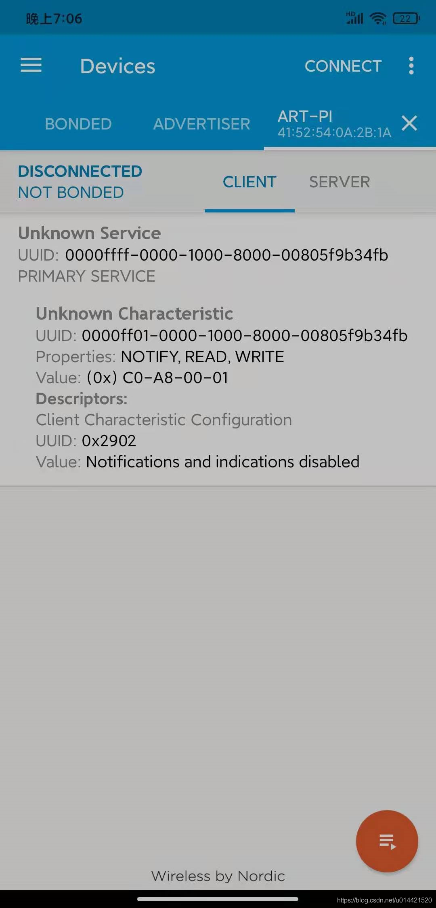
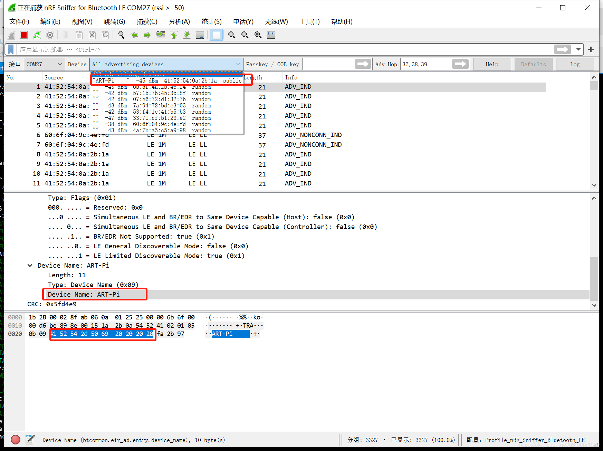
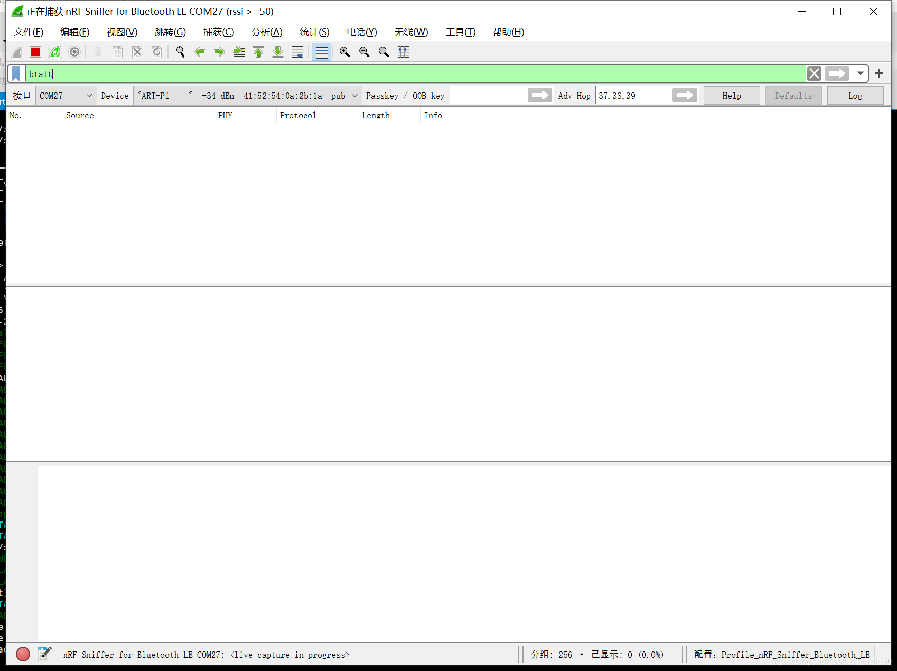
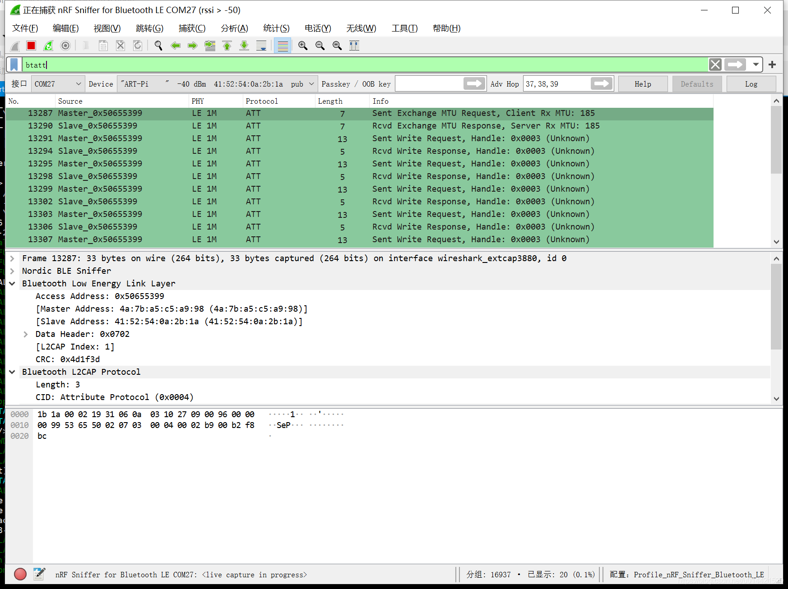
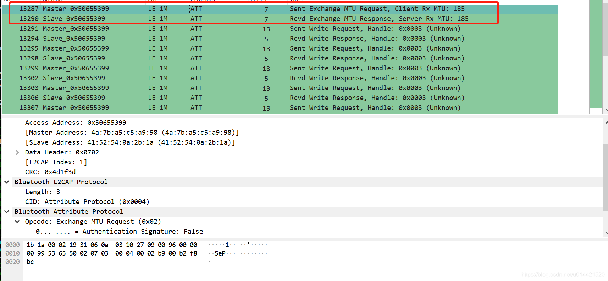
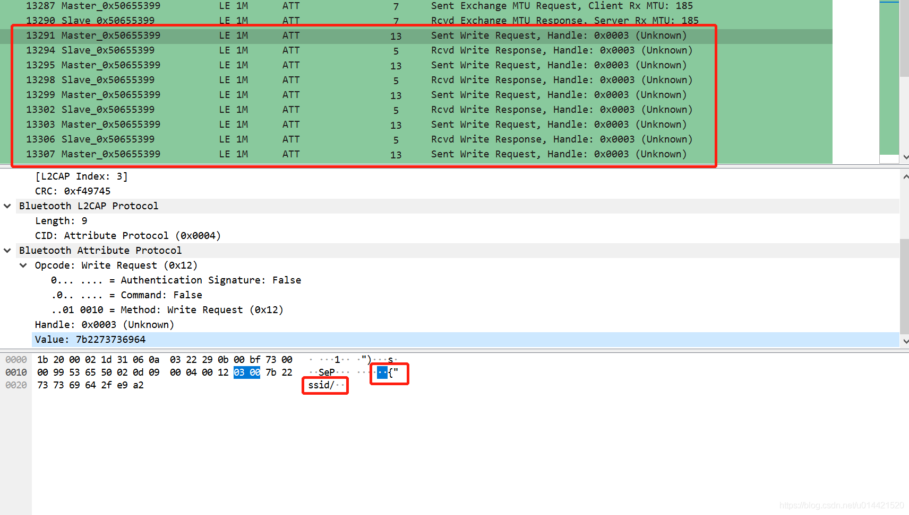
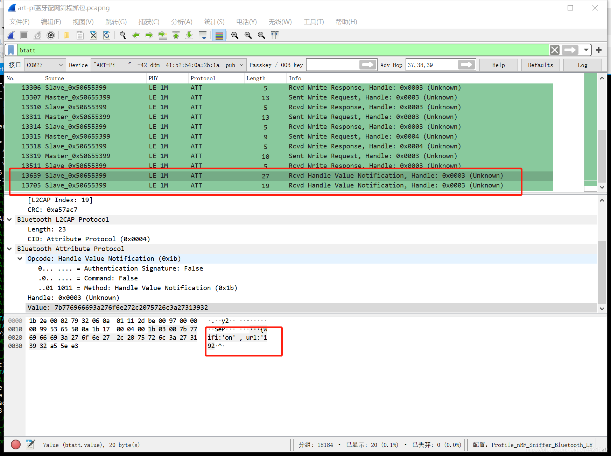

5. ART-PI开发板蓝牙配网流程分析
5.1. 准备工作
art-pi开发板一块
Android/iOS手机一部
nrf sniffer抓包工具一个
5.2. 完整配对流程体验
开发板默认烧录的出厂固件自带蓝牙配网功能，如果烧录了其他工程，则需要在rt-thread studio 上重新烧录art-pi_factory工程。上电后开发板蓝牙模组会自动广播，设备名称是
ART-PI。手机(手机需要开启蓝牙，注：部分华为/荣耀手机需要开启定位功能)打开微信
搜索WiFi配网助手，选择设备为ART-PI，如下图所示：则表示手机成功搜索到了开发板的广播包。 然后点击蓝牙配网，稍等片刻即可完成配置。 
浏览器输入上图的IP地址即可看到art-pi的一些信息。 
至此完成了蓝牙配网的体验。
5.3. 蓝牙配网背后流程解析
使用nrf connect 来查看artpi的service
我们使用nrf connect来连接设备名称为art-pi的蓝牙设备，看看该设备都提供了那些服务。如下图所示：  如上图所示，提供了一个读写和通知的service，大胆猜测微信小程序配网应该是蓝牙连接成功后，通过该service来交换WiFi ssid和password信息。
使用nrf sniffer来抓取数据配网数据包
nrf sniffer的安装和基本使用技巧见我之前的文章，这里不再赘述。
直接打开wireshark，找到art-pi并选中。注意：wireshark默认抓取的是LE LL的广播包，并不是我们需要分析的ATT包。  然后在过滤器选项里过滤条件设置为btatt，即：只抓取ATT包。  最后点击开始抓包，虽然这里提示没有抓取到任何数据，但是不用担心，重复上面的蓝牙配网流程。就可以抓到配网的数据包了。 
配网流程分析
微信小程序扫描周围的蓝牙设备并放到选择蓝牙设备的下拉列表中等待用户点击。
用户输入了WiFi的ssid和password后，选择点击蓝牙配网，此时微信小程序调用蓝牙api完成和第一步选的蓝牙设备的蓝牙连接。
接着微信小程序向artpi开发板写入WiFi的ssid和password信息，并等待开发板的反馈。
开发板配网成功并反馈自己的IP地址，微信小程序收到IP地址后判断配网成功并显示成功界面和开发板IP。
蓝牙ATT包分析
蓝牙连接建立后，微信小程序向开发板询问了MTU，并得到其回复。 
接着微信小程序向开发板发送WiFi信息，由于微信小程序的限制，小程序的MTU为20字节，所以这里小程序进行了分片发送，看着应该是一个json字符串。这里就是一个write request/response的循环，直到所有的信息发送完毕。 
发送完成后，开发板开始尝试联网，连接完成后，通知微信小程序配网情况。应该也是一个json字符串，包括了配网状态和IP地址。 
5.4. 补充
wireshark 默认抓取的是LE LL广播包，并不是我们想要的其他数据包，这里就需要先选择device，然后过滤器里过滤出和device相关的数据包。部分过滤器的参考选项如下：
btle : 显示所有的ble数据包
!(btle.length == 0) : 过滤长度为0的包，即过滤掉空包
btatt : 只显示ATT数据包
btsmp : 只显示SMP配对过程数据包
btl2cap : 只显示L2CAP层数据包,包括ATT SMP L2CAP层其他的数据包
( (frame.len == 12) || ( frame.len == 34)) : 显示数据帧长度为12或者34字节长度 的数据包